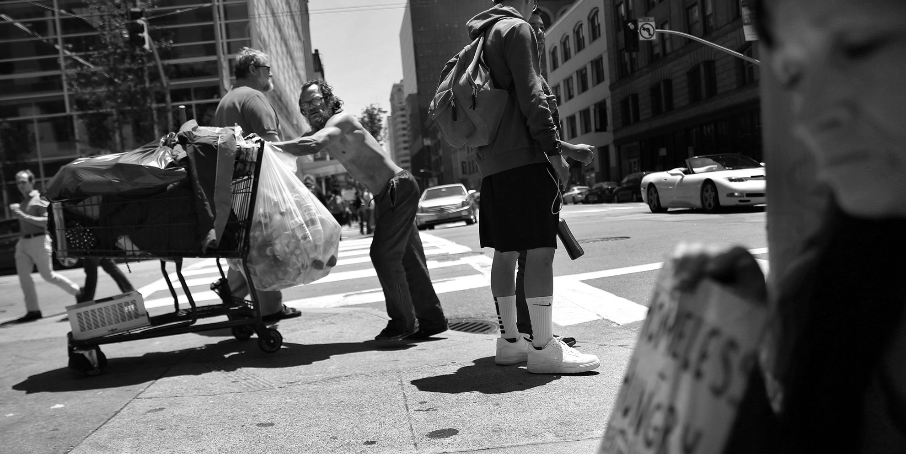

How many people live on our streets?
June 28, 2016

A man pushes a grocery cart across Second Street while Christine Boyer (right) panhandles on the corner of Mission and Second Street on Friday, May, 27, 2016 in San Francisco, California.
{% import '_components/_credits.html' as credit %}
{{ credit.info('Reporter: Joaquin Palomino', 'jpalomino', 'JoaquinPalomino' ) }}
{{ credit.info("Interactive producers: Emma O'Neill", "eoneill", "emmaruthoneill" ) }}
{{ credit.info('Lucio Villa', 'lvilla', 'luciovilla' ) }}
{{ credit.info('Benjamin Din', 'bdin', 'benjamindin' ) }}
Read related stories
{{ related.story('TITLE', 'URL', '../static/images/test/01.jpg' ) }}
{{ related.story('TITLE', 'URL', '../static/images/test/01.jpg' ) }}
{{ related.story('TITLE', 'URL', '../static/images/test/01.jpg' ) }}
{{ related.story('TITLE', 'URL', '../static/images/test/01.jpg' ) }}